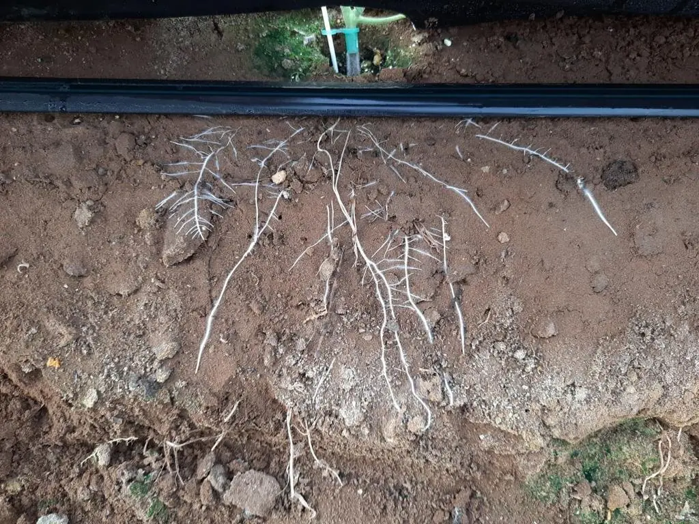
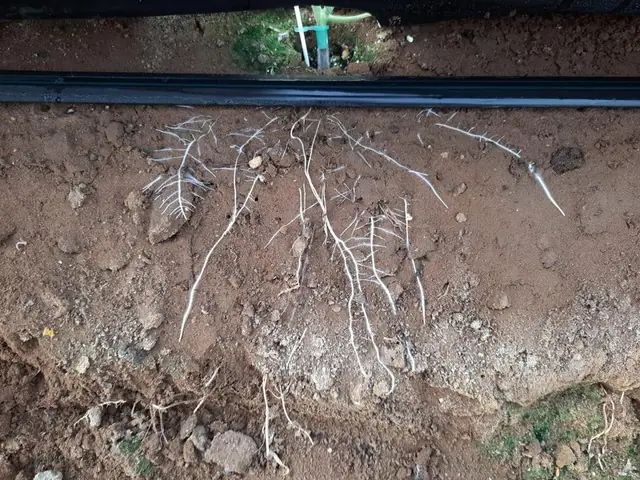
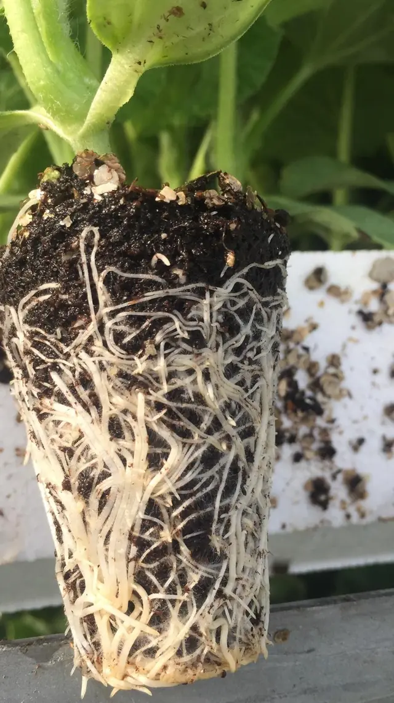
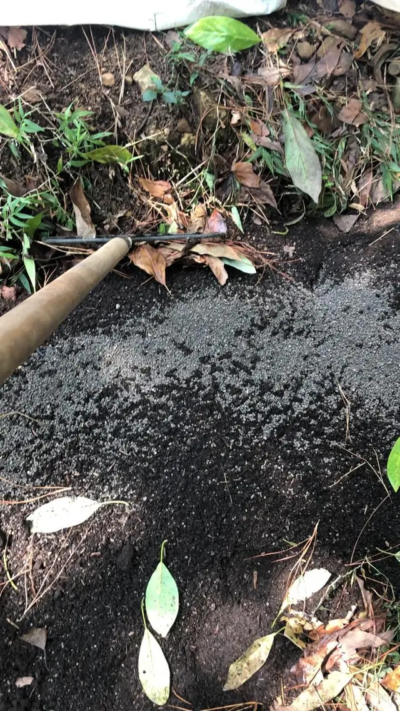
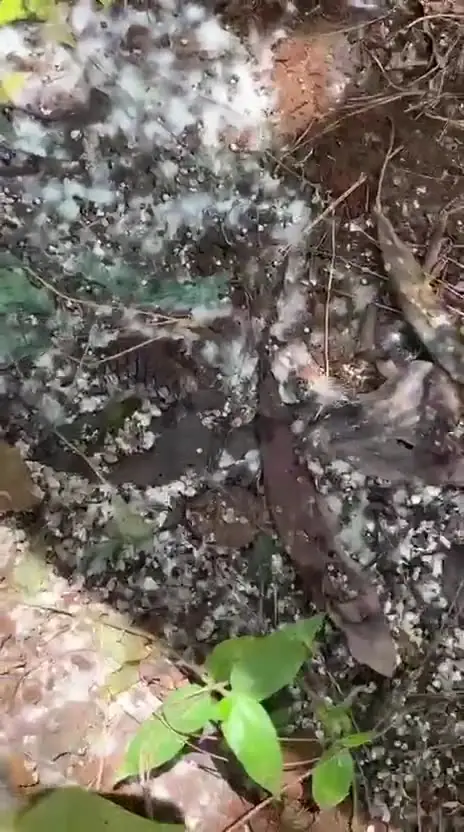
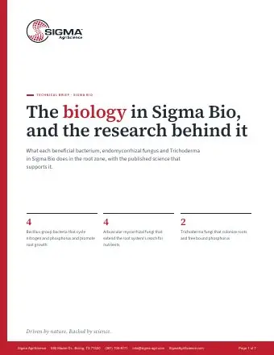

Feed
Slow-release organic nutrients
Soil microbes turn the organic nitrogen and phosphorus in each granule into plant food over 8 to 12 weeks. Plants get a steady supply instead of a flush, and nothing burns.

The Science
Organic nutrients, beneficial microbes and soil carbon working together in the root zone. Start with the short version; the details are below whenever you want them.
The short version
Feed
Soil microbes turn the organic nitrogen and phosphorus in each granule into plant food over 8 to 12 weeks. Plants get a steady supply instead of a flush, and nothing burns.
Colonize
Three groups of organisms, Bacillus bacteria, mycorrhizal fungi and Trichoderma, colonize roots, extend their reach and free up nutrients already in your soil.
Hold
Humic acids and organic matter hold nutrients and water in the root zone, right where roots can reach them, and give the biology a place to live.
+16%
Average crop yield gain from microbial biofertilizers, across 171 studies
Schütz et al. (2018)
+23%
Yield gain from mycorrhizal fungi across 13 rainfed crops
Wu et al. (2022)
+21%
More root growth from humic substances, across 81 studies
Rose et al. (2014)
How it works
Five processes, from the day a granule lands to the end of the season. The photos are from crops in Sigma programs.




Soil microbes break down the organic nitrogen and phosphorus in each granule into forms roots can take up.
Organic N-P-K in every granule · Photo C
Beneficial bacteria form a film on the root surface, cycle nutrients out of organic matter and free phosphorus locked up by calcium, iron and aluminum.
Bacillus, 2.8 million CFU/lb in most grades · Photo B
Fungal threads grow from inside the root out past the soil it has already drained, and bring back phosphorus, zinc, copper and water.
Four Glomus species, about 6 propagules/lb · Photo A, B
Humic carbon adds exchange sites that hold potassium, calcium, magnesium and ammonium where roots can reach them.
Humic acids, 3 to 6% · Photo A
Fast-growing fungi release enzymes that break down crop residue and leaf litter, returning its nutrients to the soil.
Trichoderma, 480,000 CFU/lb in most grades · Photo D
Timing depends on soil temperature, moisture and organic matter.
Deep dive
For agronomists, grounds managers and anyone who wants the full picture. Pick a topic.
Bacteria
Rod-shaped soil bacteria, among the most widely studied plant-growth-promoting rhizobacteria.
In Sigma: B. subtilis · B. amyloliquefaciens · B. licheniformis · Brevibacillus laterosporus
Fungi
Arbuscular mycorrhizal fungi live inside root cells and trade nutrients for sugars from the plant, a partnership found in most crops and turfgrasses.
In Sigma: Glomus intraradices · G. etunicatum · G. aggregatum · G. mosseae
Fungi
Fast-growing soil fungi that work through crop residue and colonize root surfaces.
In Sigma: Trichoderma harzianum · T. viride
Each does a different job, and combinations add complementary functions. In a meta-analysis of mycorrhizal studies, mixed-species inoculum produced stronger plant responses than single species (Hoeksema et al. 2010), and co-inoculating bacteria with mycorrhizal fungi usually adds up rather than competes (Berrios et al. 2024).
Cole crops (cabbage, broccoli, cauliflower, canola) and the beet and spinach family don't form mycorrhizal partnerships. Bacillus, Trichoderma, humic carbon and organic nitrogen still work for them, and mycorrhizae carry over to the next crop in the rotation.
Printed on every product label, per pound. CFU (colony-forming units) counts live bacteria and Trichoderma; propagules are the spores and root fragments that start a mycorrhizal colonization.
| Products | Beneficial bacteria | Mycorrhizae | Trichoderma | Humic acids |
|---|---|---|---|---|
| 4,200,000 CFU/Lb | 9.4 Prop/Lb. | 716,000 CFU/Lb | 6.0% | |
| 2,800,000 CFU/Lb | 6.1 Prop/Lb. | 480,000 CFU/Lb | 3.0% | |
| 2,800,000 CFU/Lb | 6.2 Prop/Lb. | 480,000 CFU/Lb | 3.0% | |
| 420,000 CFU/Lb | 0.91 Prop/Lb. | 72,000 CFU/Lb | 3.0% |
Each organism in Sigma's biology has published research behind it. Open a strain to see the study. These studies tested each organism on its own, under the conditions listed; they aren't trials of Sigma products.
Bacteria · 4
Less sodium reached the shoots of plants under salt stress, and chlorophyll ran about 57% higher at the strongest salt level.
Test conditions: White clover, greenhouse pots.
More of the root growth hormone IAA (auxin) released when tryptophan, an amino acid found in root exudates, was available. Strains that could not make IAA promoted plant growth less.
Test conditions: Laboratory cultures and plant growth tests.
Idris et al. (2007), Molecular Plant-Microbe Interactions 20:619
Fresh weight, dry weight, plant height and lateral root growth all rose significantly, with higher IAA in treated plants as the bacteria colonized the roots.
Test conditions: Apple rootstock seedlings (Malus robusta).
More shoot dry mass, with root mass close to double the untreated plants.
Test conditions: Tomato, greenhouse rhizotrons.
Nunes et al. (2022), Brazilian Journal of Microbiology 54:397
Fungi · 6
Faster phosphate uptake in colonized plants recovering from drought, with root phosphorus about 30% higher.
Test conditions: Maize, greenhouse.
Higher photosynthetic efficiency in colonized seedlings at high salt than in uncolonized seedlings.
Test conditions: Persimmon rootstock seedlings, greenhouse pots.
Uptake of phosphorus, zinc and copper rose significantly, along with dry matter, at every phosphate rate tested.
Test conditions: Leucaena, pot study.
Of the plant’s total phosphate came through the fungal hyphae from soil the roots could not reach, along with 35% of its nitrogen.
Test conditions: Couchgrass and white clover, compartment pots.
More shoot dry weight when the only added phosphorus was an insoluble organic source, and +34% with insoluble calcium phosphate.
Test conditions: Sweet clover (Melilotus officinalis), pot study.
Rise in Trichoderma populations on treated greens, holding at 100,000 CFU per gram or more through winter.
Test conditions: Creeping bentgrass greens, four years of field trials.
Microbes need carbon to eat and a place to live. Humic carbon and organic matter provide both, and they hold nutrients in the root zone.
Stable carbon fractions from humate (leonardite), built into every Sigma granular.
Research: across 81 studies, humic substances raised shoot and root growth about 20% on average. The response depends on source and rate; leonardite humics sat at the low end, around 12% for shoots (Rose et al. 2014).
Every organic input, from the granule to clippings and crop residue, builds it over time.
Research: humus holds 100 to 300 meq of exchangeable nutrients per 100 g, against under 2 for sand (GRDC). Each 1% of organic matter adds roughly 2,000 to 3,000 gallons of plant-available water per acre in the topsoil, most in sandy soils (Minasny & McBratney 2018; Libohova et al. 2017).
Humic acids, guaranteed on every label:
Most of the nitrogen in a Sigma organic granule is water-insoluble. Soil microbes turn it into plant-available ammonium and nitrate over 8 to 12 weeks.
Share of the label's soluble and insoluble nitrogen.
The 12-2-6 Bio Bridge is shown for contrast: its polymer-coated nitrogen is soluble but released over time by the coating.
Research: university release data: feather meal makes about 60% of its nitrogen available in 4 weeks and 75% in 10; poultry litter about 27% and 42% (Oregon State Extension EM 9235). Cool soil slows the first week most; by week 8 the gap is small (Hartz & Johnstone 2006).
Not every product that says "biological" delivers live organisms to the ground. Here's what matters, and how Sigma handles each one.
Are the organisms guaranteed on the label?
Look for counts per pound or per gallon (CFU for bacteria and Trichoderma, propagules for mycorrhizae), not just "contains microbes".
Which species are in it?
Names should be listed. A product with bacteria, mycorrhizae and Trichoderma covers more jobs than a single organism.
Will they survive storage?
Spore-forming bacteria such as Bacillus stay viable far longer than non-spore formers. Ask for the shelf life and storage conditions.
Is there food in the product?
Microbes need carbon. Humic acids, molasses or organic matter in the same product give them a start.
Is it tested?
Ask for a certificate of analysis, and whether heavy metals and pathogens are screened, as OMRI review and state programs require.
Is it registered where you use it?
Fertilizers and beneficial-substance products are registered state by state.
Will it spread and blend?
A stated size guide number (SGN) and a hard, round granule mean an even pass and clean blends.
Research: the AAPFCO beneficial-substance rules adopted in California require each microbe to be listed by species with a viable count (CDFA, 2024). Sigma prints species and counts on every label. OMRI review of manure-based inputs requires testing for heavy metals and pathogens.
Labels, SDS sheets and OMRI certificatesPublished, peer-reviewed findings on the organisms and materials in Sigma products. Each card links to its source.
Biofertilizers · 171 studies
+16%
Average crop yield gain from microbial biofertilizers in a global meta-analysis, rising to +20% in dry climates, with better nitrogen and phosphorus use efficiency.
Mycorrhizae · rainfed crops
+23%
Yield increase from mycorrhizal fungi across 13 rainfed crops (546 paired observations), with shoot biomass up 24% and root biomass up 30%.
Humic substances · 81 studies
+21%
Average increase in root dry weight from humic substances. Response varies by source and rate; leonardite humics sit at the low end of the range.
Soil carbon · nutrient holding
100–300
Cation exchange capacity of humus in meq per 100 g, compared with 2 to 15 for kaolinite clay and under 2 for sand. Sandy soils rely on organic matter to hold nutrients.
Organic nitrogen release
60% · 4 wk
Share of feather meal nitrogen that becomes plant-available in 4 weeks (75% by 10 weeks). Poultry litter releases more slowly, about 27% in 4 weeks.
Soil management · 54 field studies
+30%
Increase in mycorrhizal root colonization from reduced tillage and winter cover crops. Practices that protect soil life protect the inoculum.
Biology adds to good management; it doesn't replace it. The research also shows:
Go deeper
Free publications and tools from USDA, land-grant universities and organic certifiers. They're independent of Sigma and Terra Elemental and don't endorse any product.

Sigma Bio technical briefWhat each organism does, with the research behind it. 7 pages, PDF.See it in the field. Roots, mycelium and crops from growers using Sigma products.
Field ResultsSigma products are fertilizers and soil amendments, not pesticides. Results vary with soil, crop, climate and management. Always read and follow the product label. Science content courtesy of Sigma AgriScience.
Tell us about your sites and acreage. We'll recommend products and rates, send labels and SDS sheets for your files, and put together a formal quote.